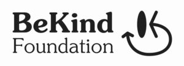

Trade Mark Journal No.2025/040 3 October 2025
WO0000001869999 (18,25,35,36,41)
Office of origin: Italy
Date of International Registration:15 April 2025
Date of designation in the UK:
15 April 2025

The mark consists of the wording Bekind Foundation with a stylized logo; Bekind is in lowercase block letters and bold, with B and K in uppercase; underneath is the word Foundation in lowercase block letters with the F in uppercase; on the right is a fantasy logo consisting of a solid black oval, below which is a curved arrow, shaped like a smile with a smaller left tip and a larger right tip, the latter pointing towards the oval.
International priority date claimed: 18 October 2024
(Italy)
(302024000154575)
- Class 18
- Leather and imitations of leather; suitcases and carry-on bags; umbrellas; collars, leashes and animal clothing; animal skins; card cases; leather credit card cases; wallets; belt pouches; leather key cases; hand bags; make-up bags sold empty; sports bags; shopping bags; beach bags; backpacks; travel bags; canvas bags; leather document folders, namely conference folders made of leather; shoe bags.
- Class 25
- Clothing; footwear; headgear; shirts; pants; jackets; tee-shirts; overalls; skirts; blouses; sweatshirts; jumpers; cardigans; coats; furs [garments]; shawls; jeans; ties; sportswear; swimwear; bathrobes; socks and stockings; tights; foulards [handkerchiefs]; bandanas [scarves]; scarves; pyjamas; dressing gowns; underwear; aprons; uniforms; waterproof suits with jacket and trousers; overcoats; ponchos; anoraks; down jackets; parkas; hoods; ski trousers; ski jackets; ski suits; fur jackets; gloves [clothing]; baby clothes; belts; boots; slippers; sandals; sports shoes; caps; hats; visors.
- Class 35
- Auctioning services; organisation, management and supervision of incentive and loyalty programmes; advertising services; promotional services; charity work, i.e. administration and office work; public works advertising services, i.e. advertising services for charitable purposes; organisation of the promotion of events for the collection of charitable funds; retail services in the field of clothing and leather goods, namely, suitcases and carry-on bags, leather credit card cases, leather document folders, wallets, belt pouches, leather key cases, hand bags, back packs and travel bags; commercial mediation in the sale of clothing and leather goods; advertising, including on-line advertising on a computer network; charity advertising; presentation of products in any media for retail sale; public relations.
- Class 36
- Insurance; financial affairs; monetary affairs; real estate affairs; financial services relating to the promotion of the welfare of people and animals; financial services relating to humanitarian aid; financial services relating to charitable collections; charitable collections; charitable donations relating to food, clothing and drugs, namely charitable fundraising services in relation to supplying food, clothing and drugs to those in need; sponsorship of international student exchange programs, namely financial sponsorship of international student exchange programs; management and monitoring of charitable funds; distribution and allocation of charitable funds; credit card and charge card services; financial activities to promote charitable donations; information on corporate donations and employee payroll donations; organisation of charitable fundraising; fundraising for charitable purposes; fundraising for financing; management and monitoring of charitable funds; charitable fundraising services; fundraising services for charitable purposes through the sale of clothing and leather goods; organisation of fundraising activities and events; collection and distribution of donations to associations; donation services (financial sponsorship) for charitable and humanitarian purposes; information and advisory services related to the above services.
- Class 41
- Organising events for cultural, recreational, sporting and charitable purposes; organising and conducting entertainment events for charitable purposes; education services; training services; entertainment and amusement services; sporting and cultural activities, including teaching and education services relating to international humanitarian aid and development; publishing of books, texts, brochures, reports and magazines; conducting and organising cultural and educational events; organising fashion events for charity purposes; conducting conventions, conferences, seminars, exhibitions, workshops and events; organising fashion shows and catwalks; information and consultancy services related to the above services.
BE KIND FOUNDATION - ETS
Representative: Stevens Hewlett & Perkins, First Floor, St Bartholomew's House, Lewins Mead Bristol BS1 2NH UNITED KINGDOM